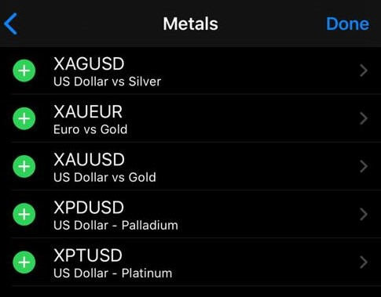

Bottom We moving with this, Let’s put our mind together. Let’s be ready for this, dedication, seeking knowledge with discipline and consistency, is key in life So Let’s kick off. The class will be starting on the 7th September, 2016
We would be starting with the first topics on our outline; AForex
INTRODUCTION AND WHAT IS FOREX: Forex is just a Short form for FOREIGN EXCHANGE.Forex is one of the Largest market in the world With a Total Daily Liquidity of $5.3 Trillion dollars, the New York Stock Exchange which is the Second Largest Market is having a Daily Trading Volume of $169 Billion Dollars, While the Cryptomarket,for those of us who know about Bitcoins has a Total Market cap of just $236, All these Statistics are online, So you can do well to confirm them for yourselves. That is to show the massive Liquidity…. Which is on the Forex Market. That is how large the Forex market is, So we have seen a Brief Introduction of the Forex market, We would still see more, but for now let’s fire on
Let’s move on to the next topic
WHAT IS TRADED ON FOREX
Someone would ask, What is Traded on the Forex market.This is not the form of market where buy your clothes or shoes, This is not Idumot or Oshodi Market, Accra Mall or your normal Local markets in any part of the world u are. In Forex market we Trade the Following, These are the Assets we trade in FOREX….. specifically SPOT FOREXcommodity and metals
Currency
There are a lot of international Currency to trade in forex market, we have the;
USD
CAD
AUD
CHF
EUR
NZD
GBP
USD stands for United state dollar CAD means Canadian dollar AUD means Australia dollar CHF means Swiss franc EUR means EURO GBP means Great Britain pounds NZD means New Zealand dollar
And to trade this currencies, there must be a pair,When u are changing currencies, that means they exist in pairs, if you are exchanging USD for NGN, You have it this way, USD/NGN which means you are selling USD and buying NGN, which also means that if you want to trade other currencies against each other they must exists in pair. Note that you can not have three currency pair, e.g USD/NGN/AUD. You can only have two currency pair, other currency exchange can exist as AUD/USD, GBP/USD, Eur/Cad and so on.
You see those ones I circled? They are all currency pairs and they are traded against each other, I hope we are following; So we moving to the next asset.
COMMODITIES
Gold
Silver

Gold is represented in Forex as XAU,SILVER is represented in Forex as XAG, and they are both traded in Forex against USD, AS IN XAUUSD and XAGUSD, let me show you
CRYPTOCURRENCY
Some of us might be farmiliar with Cryptocurrency, of cus, i hope we are following. It is a form of currency that we also trade in pairs just like the normal currency. We trade it in pairs that is they don’t stand alone,they exist in pairs. In Cryptocurrency we trade BITCOIN (BTC),BTC is the only crypto we trade in spot forex, and it is traded only against USD, represented as BTCUSD.
Let’s move on to the next topic
WHO IS A FOREX BROKER
Forex Brokers are Firms that gives you access to the FOREX MARKET,they provide U as a Trader access to the Financial market…
By providing a Trading account for U. They gives Traders what we call Leverage. (we would see that soon). They also provide Support Functions to the traders, So what are actually do is that we are constantly Transacting in the above items I listed up there. I would take u all through how to Trade on them, so just follow the Lectures closely,
There are various Brokers in the Forex Market, We have;
Hotforex
Fxtm
Fxcm
Tifia
Fbs
LiteForex, Etc.
We are still going to take time to talk about Brokers in details, but we have now aware of their Functions and what they offer the Traders
but I use TIFIA broker along with my students. Let’s move to our last topic for today, we are not rushing this stage 1 because we are gonna finish it Tomorrow.
TRADING TIMES AND TRADING SESSIONS
We are entering into the most part of this Forex Training… If you were distracted before, let’s focus because your proper understanding of the Forex market would be determined if you actually know the Forex cycle.There are Various Trading Times and Trading Sessions in Forex They include;
SYDNEY SESSION
TOKYO SESSION
LONDON SESSION
FRANKFURT SESSION
NEW YORK SESSION
The Sessions names are derived from the major cities in which most of the Transactions are done, for example
Sydney Session is represents Australia and other countries around that Time zone, Tokyo session:sometimes called ASIAN Session represents Japan and some of the Asian countries. London Session represents The United Kingdom and the countries within it. FRANKFURT session which is in Germany represents Europe. NewYork Session represents The Americas
Forex is actually a 24 hours market.It is most times regarded as the Market that never Sleeps because it’s open for 24 hours of the day except on Weekends, so no matter where you are around the World, no matter your Time zone, you can actually Trade this Large, Highly Liquid market, check this check the open and the close time you will understand more, Let’s note these Times down in our Exercise as you all would be needing them for your Trading. Also Note that these Times are listed in *GMT* Greenwich Meridian Time so you should do the appropriate Calculation depending on your countries Time zone, so as to know which session, you are currently on all Sessions lasts for 9 hours.So having known their Opening Times, to get their appropriate Closing Times, just Add 9 hours to the Opening Time to get when they would Close, now there is an important thing to Note here, This is what many Forex Traders don’t actually understand because nobody taught them, It is always good to Trade the Market when two Markets are open at the same time.
When two of the sessions are open, please take note of this important point, this is because Volatility is always more when two or more Sessions are open and in Forex Market, More Volatility means more money.As a Forex Trader, you wouldn’t want to trade a quiet market, because there won’t be much Fluctuations and it’s those movements that make money for us, you would come to understand these soon and know what I mean.
Example; by 12 AM GMT Sydney Session and Tokyo Session would be open together and it would have more Volatility than someone that is trading at 9PM GMT because the market would be quiet.
Another Example is by 8AM GMT, London Session and Frankfurt Session would be open, infact even Tokyo would be with them briefly, so you would notice that Volatility would increase during such times.
So as a Forex Trader , Always time your trading to fall in periods where two or more Markets are open at the same time, by doing that you would always have an edge in the market. We would be learning more important things, let’s just follow the Trading class closely
Let’s fire on.
Our Next Topic is
If there is any questions,please let’s ask on the WhatsApp group.
TERMINOLOGIES USED IN FOREX
I welcome you all to class once again, and we continuing from there straight away, Let’s fire on.
let’s follow the flow, just Like every Field you try to learn, you would have to get accustomed to its Terms and Terminologies
so also is the Field of Forex, you would need to learn about the Terminologies so as to be able to communicate with the Market, Analysts and also with your fellow Traders, You may be among the gathering of Forex Traders but you won’t understand a dime of what they are saying, this is because U don’t know the terms, so that is what we would be learning in this section.So as I was saying for every New field you embark upon in Life, U would encounter New Terminologies and terms which is peculiar to such field, be it Law, Medicine, Journalism , Engineering etc. And you would have to get yourself acquainted with their Terminologies so as to be able to communicate properly. So also is Forex, for you to be able to Learn and Trade, you should get to know some of the terms that is used in FOREX Trading.
So that you can understand the News, Flow with your Fellow Forex traders and understand Analysts.
So let’s get to it,Terminologies:
TO GO LONG….means to BUY
TO GO SHORT…… means to SELL
If a Trader tells you that he went Long on a Currency pair, he meant that he Bought the pair. While if they tell you that they Short a Currency pair, it means that they sold the pair. Soon you would get to see that All what we are doing in Forex is Buying and Selling.
The next terms we would see are; BULLISH MARKET...A market that is going Upwards BEARISH MARKET...A Market that is going downwards.
When someone tells u that a currency pair or a commodity is Bullish, it’s telling you that its going Up, while one that is Bearish is going down, Let’s be noting all these terms down in our Exercise books or Jotters, you all would be needing them as you we progress with the Training. BULLS….. The Buyers are referred to as Bulls BEARS….. The Sellers are referred to as Bears RANGING…..A Market is said to be Ranging, if it does not have any particular direction. It’s neither moving Upwards not Downwards
TRENDING: A Market that is has a direction. It’s either moving Upwards or downwards, so you can hear people say a market is Trending upwards or the market is Trending downwards, so you may hear people tell you that the Market is just Ranging, they are indirectly telling you that the the market has not found any direction yet. NFP An acronym for NON FARM PAYROLL. A very important News Event in the US.
The next terminology that we would be looking at is, HAWKISH: This term is mostly used when referring to the Central Bank Governor or personell of a Country. When they are Hawkish, they tend to be liberal on interest rate and are willing to increase it. This is good news for investors. DOVISH This is the opposite of Hawkish. Financial personnel who are Dovish are very restrictive… They do not want to tamper with the interest rate, they even want to reduce it, this is bad news for investors. Like what is happening to Great Britain right now
Also Most of the Currency pairs have specific names in which they are called, we would get to know them soon, Eg
The dollar is sometimes called Greenback
The Pounds is called the cable
The New Zealand dollars is called the Kiwi
The Australian dollars is the Aussie
The Canadian Dollars is called the Loonie
Oil is referred to as the Black Gold, Etc.
We would get to know them as we go along with the training, it’s just to get you acquainted with the most popular ones so that When you see fellow Forex Traders discussing, U would tag along easily. As we go on with the Training, We would get to see more Terminologies and Explain them as we see them, We would be continuing with the outline.
Our first topic today is FORMS OF TRADING
There are basically two forms of Trading in Forex. It’s been said that News is what moves the market, everyday Varrious news are being released by these major countries and they either positively Or negatively affect the Currency pair involved and then you make your Trading decision based on the news you heard, We see all these News on CNN, Bloomberg, CNBC etc. Also Your MT4 App has a Summary of News Section, some sites like forexfactory.com, dailyfx.com etc., gives you summary of this News. We would come to see them later, now whether the News is Positive or Negative as a Forex trader, that is none of your business because you make money both ways.
In Forex, we make Money Both ways. If a Currency pair is appreciating, We go long on the pair when a Currency is also depreciating based on the News, We go short on the pair, Like many traders do everyday, They buy some and sell some, so in Forex, you make money on both sides of the News, We would come to see how to trade the News later.
Now let’s talk about NFP
We would be discussing an Important News Released by the United States. Even though there are News release everyday. There is what we Forex Traders Call
KING OF ALL NEWS
It’s called the NFPNON FARM PAYROLL
This is a News released by the United States of America. Among all the news released by the US, this is the highest because it causes the most Volatility in the market.Non Farm Payroll is one of the Biggest News that every trader awaits on. Let’s start with understanding what NFP is, let’s talk about what the News entails. It’s a News that contains various data and statistics released by the US Bureau of Labor and Statistics. It’s very influential as an indicator of US Economy because of the US Federal Reserve makes monetary policy decisions based on this data. Hence Investors, Financial Analysts, Forex traders, Stock traders make trading decisions with the News. It is released every 1st Friday of the Month by
8:30amEST
12:30pm GMT
12:30pm Ghana time
1:30pm Nigerian time
2:30pm South Africa time, Etc
Just Calculate according to your Time zone, The data released include
Non Farm Payroll increase: This is the number of new jobs added in the US labor sector in the previous month, These data includes employment in the manufacturing sector, Construction sector, Goods sector etc. Excluding Farm workers (hence the name), also excluding Private Household employees and non profit organizations, it is usually compared to the previous data
For example:
The one we traded last Friday, with my students is the number of new jobs added in July, that was NFP, it’s usually that Massive.
It also includes
Unemployment rate of the US:
Which sectors of the economy, these jobs were added mostly, it gives investors and traders where are the possible sectors to invest in as the sector that added more jobs would be most likely to have experienced growth. It also includes the Average hourly earnings of the workers in the US, this is also an Economic indicator because even if the number of workers didn’t change. But however their earnings increased, it would have the same effect as if their number increased, same also could be interpreted in reverse, if their earnings reduced
Then lastly the data includes a revision of previous non farm payroll, because investors compare these values together whether there has been an improvement or reduction. this also gives you an idea if the economy is growing or reducing. However when the number of jobs added are reduced. The reverse occurs… People won’t have money to spend on goods produced and services hence dwindling the economy. Also the US government has an amount of money paid to the unemployed. When more jobs are added, more people would be employed. This reduces the unemployment rate, as the unemployed citizens reduce, less money leaves the government pocket, hence boosting the economy
Let’s move on to the next form of Analysis, The other form of Analysis is
TECHNICAL ANALYSIS
This form of Trading is when you Analyse the Market using Indicators, Charts Patterns , Candlesticks, Fibonacci, Support and Resistance, Pivot Points, Elliott waves etc., when you use any of the above to analyze the market, It’s called Technical Analysis.
Majority of what we listed on the Course outline are Technical Analysis, it’s the most popular Form of Trading. This is because High Volatile News is not released Everyday so you can’t just depend on Fundamental Analysis alone, everyday can’t be Christmas. So as a Forex Trader, you must learn how to trade the market using Technical Analysis, high Volatile News like NFP is not going to be released everyday , so you have to learn how to Analyze the market and trade in the absence of any major News release, that’s what makes you a complete Forex Trader. Among the 2 major Forms of Analysis, no one is superior to each other and also no one is used in isolation. so you would learn as we move on, how to harmonise the two to constantly keep you on top.This will be the the end of stage 1, if you have made it this far congrats.
Before we proceed to stage two, i would like you guys to register so you can have access to the rest of this course.
STAGE 2
WHAT IS A PIP
CONCEPT OF BID AND ASK PRICE
WHAT IS A SPREAD
FORMS OF TRADING ORDERS
CONCEPT OF TAKE PROFIT AND STOP LOSS
LEVERAGE
LOT SIZE
RISK MANAGEMENT
COMMON MISTAKES BY TRADERS
TRADING PLAN
MT4 INTERFACE PART 2
Hello guys, we welcome you all to stage two of this course, I welcome us again to Class…
< id="#arc_shot">Arc Shot
Trade With Ayo Fx, [8/11/20, 5:06 PM]
Today we begin our stage 2
Trade With Ayo Fx, [8/11/20, 5:06 PM]
[In reply to Trade With Ayo Fx]
And this is the outline we are gonna be following…
Trade With Ayo Fx, [8/11/20, 5:06 PM]
Accordingly
Trade With Ayo Fx, [8/11/20, 5:06 PM]
Let’s keep calm…we are getting to stage 3 soonest…
Trade With Ayo Fx, [8/11/20, 5:09 PM]
TODAY MARKS THE REAL BEGINNING OF YOUR FOREX JOURNEY
IF YOU HAVE NOT BEEN FOCUSED BEFORE , PLEASE START FROM TODAY.
ALL WHAT WE HAVE BEEN DOING SINCE IS INTRODUCTION, TODAY WE ARE STARTING THE MAIN FOUNDATION
Trade With Ayo Fx, [8/11/20, 5:09 PM]
We are Starting with the Topic
WHAT IS A PIP
PIP IS THE BEDROCK OF EVERYTHING, I REPEAT EVERYTHING WE ARE GOING TO BE DOING IN FOREX.
Trade With Ayo Fx, [8/11/20, 5:09 PM]
If you miss the *Concept of Pips* here, believe me your foundation is going to be shaky all through your Forex journey.
Currencies are gauged in pips, Trade orders are placed in pips, Profits are calculated in pips.
Practically everything we are doing in Forex involves Pips.
So take your time to understand this very Important topic.
Bottom
Trade With Ayo Fx, [8/11/20, 5:11 PM]
Let’s now fire on
A PIP is the smallest unit in which a Currency pair can change.
It can also be said to be a standardized unit and the smallest amount by which a currency pair in forex market can change
Trade With Ayo Fx, [8/11/20, 5:11 PM]
It’s just like the *CELL* of Forex
Though as u go further, U would learn that there are smaller versions called micropips..
But let’s not get anything complicated for now
Trade With Ayo Fx, [8/11/20, 5:11 PM]
Let’s now get to how to Calculate it
This is where I need maximum concentration from U all
..
If you are distracted before now, please stay focused from now onwards
Trade With Ayo Fx, [8/11/20, 5:12 PM]
For most currency pairs in Forex, We start Calculating the pips from the *4th decimal place*
However there are few exceptions..
We would start with the general ones, before we go to the exceptions
Trade With Ayo Fx, [8/11/20, 5:15 PM]
So before I start , Let me repeat
The Pip is being calculated starting from the 4th decimal place.
So ignore that number superscript beside all the pairs.
Trade With Ayo Fx, [8/11/20, 5:16 PM]
[Photo]
Trade With Ayo Fx, [8/11/20, 5:17 PM]
[In reply to Trade With Ayo Fx]
Ignore the superscript…
Trade With Ayo Fx, [8/11/20, 5:17 PM]
[In reply to Trade With Ayo Fx]
And from the picture I uploaded above…you can see that most if them have 4 decimal figure..ignore the super script…
Trade With Ayo Fx, [8/11/20, 5:18 PM]
So am gonna be giving some examples now….as assumption….we are not gonna be using the ones in the pictures….but its all gonna be 4 decimal figure
Trade With Ayo Fx, [8/11/20, 5:20 PM]
So let’s get to it..
Trade With Ayo Fx, [8/11/20, 5:20 PM]
Let’s assume EURUSD is at the market value of 1.1292
Trade With Ayo Fx, [8/11/20, 5:20 PM]
Currency moves generally in Forex are measured and calculated in pips
Trade With Ayo Fx, [8/11/20, 5:20 PM]
Currency moves generally in Forex are measured and calculated in pips
Trade With Ayo Fx, [8/11/20, 5:21 PM]
So if EURUSD which is currently at 1.1292
Makes a move of 1 pip
It’s new value would become 1.1293
Trade With Ayo Fx, [8/11/20, 5:21 PM]
So how did I get 1.1293??
I added 1 to the 4th decimal placed number there and it increased from “2” to “3”
Trade With Ayo Fx, [8/11/20, 5:21 PM]
Very simple…
Trade With Ayo Fx, [8/11/20, 5:24 PM]
Let’s still have another example
Let’s Take a Look at GBPUSD (ie Pounds Vs US Dollars)
Which is Currently at market price of 1.3031
Trade With Ayo Fx, [8/11/20, 5:25 PM]
Now if GBPUSD makes a move of 2 pips from that Current value
..
It’s new Value would be at 1.3033
Now how do we get this 1.3033 ??
We added “2” to the 4th decimal placed number which is “1” and it increased to “3”
Trade With Ayo Fx, [8/11/20, 5:26 PM]
Let’s do one more Example…before we go to the main Calculation
Let’s take a look at EURGBP, which is at a Current market value of 0.8663
Trade With Ayo Fx, [8/11/20, 5:26 PM]
If EURGBP makes a move of 5 pips from that value of 0.8663
The New market value would be at 0.8668
How did we get that ??
Once again, we added “5” to the 4th decimal placed number which was “3” and we got “8”
Hence our new value was 0.8668
Trade With Ayo Fx, [8/11/20, 5:27 PM]
Let’s go a little bit higher
I would give guys assignments for you all to practice too after today’s Class
Assuming we were now told that GBPUSD made a move of *10 pips* from 1.3031
We would as usual add the figure 10 from the 4th placed decimal number and we would have our new value as
1.3031 >>>> 1.3041
Trade With Ayo Fx, [8/11/20, 5:29 PM]
Now for most currency pairs in Forex…. The pip Calculation, starts from the 4th decimal place.
Now there are some currency pairs that are not up to 4 decimal place.
Some of them have specific ways of Calculating them .
Example of those pairs are
JPY pairs
Eg
USDJPY
EURJPY
GBPJPY
AUDJPY
NZDJPY etc
Another popular Example is Gold
Ie
XAUUSD
Trade With Ayo Fx, [8/11/20, 5:30 PM]
LETS START WITH *JPY PAIRS*
For JPY pairs Eg USDJPY….. The pips Calculation starts from the 2nd decimal place digit. If you notice that it’s not up to 4 decimal place like others that we did before…
Let’s see some examples
Trade With Ayo Fx, [8/11/20, 5:33 PM]
[Photo]
Trade With Ayo Fx, [8/11/20, 5:34 PM]
[Photo]
Trade With Ayo Fx, [8/11/20, 5:36 PM]
Let’s assume USDJPY is at the market value of *109.67*
Trade With Ayo Fx, [8/11/20, 5:36 PM]
From that Value… If it makes a move of 2 pips.
The New value would be at *109.69*
How did we get this
We started adding “2” to the second decimal place number which is “7” and it increased to “9”
That’s how we got *109.69*
Trade With Ayo Fx, [8/11/20, 5:38 PM]
Let’s go a little bit higher
Assuming USDJPY made a move of 10 pips from that Value of 109.67
The new value by simply adding 10 from the 2nd decimal place number would be
109.77
Trade With Ayo Fx, [8/11/20, 5:39 PM]
Let’s now get to the last exception which is Gold
By seeing how to Calculate pips on Gold ie XAUUSD
Gold is represented as XAUUSD
Because, if the Chemical Formula for Gold in the periodic table is AU
So some Brookers write it as XAUUSD instead of Gold
Trade With Ayo Fx, [8/11/20, 5:41 PM]
I usually Call *Gold* My Boss…
The Volatility is the highest..
It can move 1000 pips on a good day
Forex trading is Mind opening
Only Gold can do that
Trade With Ayo Fx, [8/11/20, 5:42 PM]
Let’s assume the price of Gold is currently at 1325.36
….if it makes a move of 2 pips.
The New value would be 1325.56
How did we get this??
As usual using the shortcut method we added “2” to the 1st decimal place number which is the figure “3”
Trade With Ayo Fx, [8/11/20, 5:44 PM]
*We would stop here for today*
Trade With Ayo Fx, [8/11/20, 5:47 PM]
Let me now open the Floor Questions
And also give u Guys Assignment
Trade With Ayo Fx, [8/11/20, 5:47 PM]
Ask you questions on WhatsApp group
Trade With Ayo Fx, [8/11/20, 5:47 PM]
Assignment 1
If AUDUSD at a current price of 0.6756 makes a move of 10 pips, what would be its New value
Assignment 2
If USDJPY at a current price of 109.04 makes a move of 20 pips, what would be its New value
Assignment 3
If XAUUSD at a current price of 1576.00 makes a move of 5 pips, what would be its New value
LETS ALL DROP THE ANSWERS OF THE ASSIGNMENT (CLASS WORK) ON THE WhatsApp GROUP
Trade With Ayo Fx, [8/11/20, 5:47 PM]
Peace guys
Trade With Ayo Fx, [8/11/20, 5:47 PM]
We meet tomorrow 5pm⏱⏱
Trade With Ayo Fx, [8/13/20, 4:04 PM]
Hello guys…
Trade With Ayo Fx, [8/13/20, 4:04 PM]
Good evening…
Trade With Ayo Fx, [8/13/20, 4:04 PM]
I expect you all to submit you assignments on the WhatsApp group
Trade With Ayo Fx, [8/13/20, 4:04 PM]
But no one did it…
Trade With Ayo Fx, [8/13/20, 4:05 PM]
That’s not to good
Trade With Ayo Fx, [8/13/20, 4:05 PM]
That’s the only way to know if you are following…
Trade With Ayo Fx, [8/13/20, 4:05 PM]
I think its because this is my first telegram lecture…
Trade With Ayo Fx, [8/13/20, 4:05 PM]
It has always been on WhatsApp
Trade With Ayo Fx, [8/13/20, 4:05 PM]
💯
Trade With Ayo Fx, [8/13/20, 4:05 PM]
So let’s move to the business of today…
Trade With Ayo Fx, [8/13/20, 4:05 PM]
💯
Trade With Ayo Fx, [8/13/20, 4:12 PM]
We are going to be moving on to
*CONCEPT OF BID PRICE AND ASK PRICE*
Trade With Ayo Fx, [8/13/20, 4:13 PM]
[Photo]
Trade With Ayo Fx, [8/13/20, 4:13 PM]
Why are there 2 prices beside each quote.
U know I always tell you guys that I like Teaching in steps that won’t overload you who is listening.
As we approach that area we would tackle it and you would understand it better
Trade With Ayo Fx, [8/13/20, 4:13 PM]
Let’s now get to what they mean
*BID PRICE* IS THE PRICE THAT BUYERS ARE WILLING TO BUY
WHILE
*ASK PRICE* IS THE PRICE THAT SELLERS ARE WILLING TO SELL
Write those definitions down.
We would break it down now
Trade With Ayo Fx, [8/13/20, 4:18 PM]
From the Image above u would see something like
*EURUSD* . 1.1586 1.1587
1.1586. Is the *Bid Price*
While
1.1587. Is the *ASK Price*
Trade With Ayo Fx, [8/13/20, 4:18 PM]
As usual, I would use what is happening around us to explain these concepts.
I always like simplifying things for my students.
Trade With Ayo Fx, [8/13/20, 4:18 PM]
Forex is not meant to be hard, it’s people that try to make it complex so as to monopolize the business for themselves.
Trade With Ayo Fx, [8/13/20, 4:18 PM]
: Let’s say u receive $10,000 ,from a friend abroad.
Trade With Ayo Fx, [8/13/20, 4:19 PM]
And u walk into a Bank to exchange it, Bank would tell you that the latest CBN rate is let’s say #350.
So they would give #3.5 Million Naira as equivalent to the $1,000
Let’s say the next day..
U walk into that same back.
U had an emergency and you needed to travel abroad and you are requesting for same $10,000.
They would now tell you that their own Bank rate is #370
So you would now have to pay #3.7 Million for same $10,000
In this situation, #350 here is the Bid price, while #370 is the Ask price.
Trade With Ayo Fx, [8/13/20, 4:19 PM]
That is how Bank makes their Money.
They just made #200,000 profit from U.
In just a space of 24 hours.
That is why Banks would always be King over the masses.
They control the flow of money.
And would always continue to live in Big houses and Drive Big cars and pay the workers peanuts.
Trade With Ayo Fx, [8/13/20, 4:19 PM]
That is why, they would never want you to learn FOREX.
Because Foreign Exchange is so Liquid that it can change your Fortune around in just few weeks of Trading.
However this Monopoly of knowledge is being circulated among the Elites
Trade With Ayo Fx, [8/13/20, 4:20 PM]
Let’s come back to Forex
In Forex, the Bid and Ask price work same way.
However not as exuberant as the one Banks exploit us with.
The difference between these 2 in forex is just in points.
So The Bid Price is that price that Buyers also in Forex are willing to Buy while
Ask price is the price that the Sellers are willing to sell.
Here Buyers and sellers are not human beings.
It’s the market in this case..
You Buy from the market and Sell to the market.
Trade With Ayo Fx, [8/13/20, 4:22 PM]
So the meaning of this above is that when you place a BUY ORDER in Forex
It would activate for you using the Ask price
(remember that the Ask price is the Price that Sellers are willing to Sell to U, who is the Buyer)
While in reverse
When you place a *SELL* ORDER in Forex
It would activate for you using the BID price
(remember that the BID price is the Price that Buyers are willing to Buy from U, who is the Seller)
Trade With Ayo Fx, [8/13/20, 4:23 PM]
Let’s relate it to our example of banks above
In the Example I gave above,
When you brought your $10,000 to the Bank, U are the seller at that instant while the Bank was the Buyer.
So they gave you their Bid price of #350.
Because that is the price they are willing to Buy
While in reverse
When you came back the next day that you want to travel for an emergency
U now became the Buyer (no longer the Seller)
U needed to Buy dollars to Travel urgently.
Now the Bank in this case became the Seller.
So they gave you the dollars at their Ask price which is the price that Sellers are willing to Sell (remember they are now the sellers)
Trade With Ayo Fx, [8/13/20, 4:25 PM]
Remember from the example I gave above 370 Naira was the Ask and it’s bigger than the Bid price which was 350 Naira
So Also in Forex… The Ask is also higher than the Bid price…
Just like we saw in the example above
EURUSD….. 1.1586 1.1587
Trade With Ayo Fx, [8/13/20, 4:25 PM]
Let’s now move to the next concept Related to them
*WHAT IS A SPREAD*
*SPREAD* is the difference between the BID and ASK price.
Trade With Ayo Fx, [8/13/20, 4:25 PM]
: In the example I gave above.
The Spread is #370 - #350 = #20
The Spread is 20 Naira.
That is the profit of the Banks.
So also in Forex, the Spread is the profit of the Brookers, however in this case, it’s very small because it’s measured in pips.
Trade With Ayo Fx, [8/13/20, 4:26 PM]
The Spread varies between Trading Sessions.
When the Volatility is high and many markets are open at the same time.
The spread is always small (meaning that you pay Banks lesser commissions), that is another advantage of Trading when many markets are open
However when only one market is open or the Volatility is low, the spreads are always bigger
Trade With Ayo Fx, [8/13/20, 4:28 PM]
So that is how the Spread works.
We would move to another important topic today
*TAKE PROFIT AND STOP LOSS*
Trade With Ayo Fx, [8/13/20, 4:28 PM]
[In reply to Trade With Ayo Fx]
🔥🔥🔥🔥
Trade With Ayo Fx, [8/13/20, 4:29 PM]
This is one of the most important part of this training
Trade With Ayo Fx, [8/13/20, 4:29 PM]
TP AND SL
Trade With Ayo Fx, [8/13/20, 4:29 PM]
Take Profit and Stop Loss are Forms of Market orders
Let’s start with *TAKE PROFIT*
Trade With Ayo Fx, [8/13/20, 4:38 PM]
As a trader, U would not always be online monitoring all your Trades.
It’s not as if we Fx Traders, just get a seat and stay in front of our laptops all day.
Some of your trades may stay over the Night, some may last for 2 days.
And U may have a date with your Babe , U have Champions League to watch, Ur Friends that just hammered on one big trade is hosting a Party , U even have your work to go to if you are a worker.
So you have many engagements
That’s where Market orders come in to play
Trade With Ayo Fx, [8/13/20, 4:38 PM]
So
*TAKE PROFIT* is a Form of market order.
That tells your Broker to Close your Trade for You and Lock in your Profit when your Trade moves a certain number of Pips in your desired direction.
Even if you are not online
Trade With Ayo Fx, [8/13/20, 4:38 PM]
Remember in Forex we are always doing 2 things.
Buying and Selling
Let’s take a scenario when we are Buying and give an example
Trade With Ayo Fx, [8/13/20, 4:39 PM]
Let’s say u entered a currency pair
Let’s call it AAA/BBB
And. It’s currently at $40
And from your Technical or Fundamental Analysis.
U found out that it *would* soon rise
So you immediately opened your MT4 and Clicked on *BUY*
Trade With Ayo Fx, [8/13/20, 4:39 PM]
And your Target profit for this particular Trade is just 50 pips.
U don’t want to be Greedy.
Like I always tell my Students, Never be Greedy in. Forex.
Eliminate Greed, Pick the little U can and move on.
Even if you can’t make $100 daily.
Even if it’s only $50 , u make daily.
My brother in a week that’s $50*5= $250 (#90,000)
Who pays u #90K in a week.
It’s good for a start and a beginner
With time, u upgrade to $100 daily
That’s $500 weekly
(#180,000)
So you grow gradually
Trade With Ayo Fx, [8/13/20, 4:40 PM]
[In reply to Trade With Ayo Fx]
And your target for this Trade is just 50 pips
U don’t want to be greedy.
For you to set a Target profit at 50 pips
U add it to the price u entered, which was $40
So your TP would be at $90
So anytime, the currency pair AAA/BBB Starts Climbing and Reaches $90
Even if you are not online, Your MT4 through your Broker’s server would close the Trade for you automatically using your MT4 and add the $50 profit to your account immediately
Trade With Ayo Fx, [8/13/20, 4:40 PM]
So that is how TP works.
Once you set it at that particular price on your MT4 , whether you are online or not.
It closes the Trade for U and Locks your profit.
Trade With Ayo Fx, [8/13/20, 4:41 PM]
[Photo]
Trade With Ayo Fx, [8/13/20, 4:41 PM]
The yellow circle is where you input your Take profit…while the green circle is where you input your stoploss
Trade With Ayo Fx, [8/13/20, 4:41 PM]
So Having seen where to Insert the Take Profit.
Let’s now do some practical Examples of how to Calculate Take profit
Trade With Ayo Fx, [8/13/20, 4:42 PM]
Assuming I want to Buy EURUSD at that Current *ASK PRICE* of 1.1338 seen in the image above
And I want a Take Profit of 30 pips.
What I would just do is to Add 30 pips to that Former value of 1.1338 and I would have
*1.1368*
I hope everyone remembered our pips calculation of yesterday…. This is where we are going to be using it
Trade With Ayo Fx, [8/13/20, 4:42 PM]
So My TP for that trade would be
1.1368
I would go into that TP box space and type it in.
So Immediately the Currency pair rises during it’s usual fluctuations and gets to 1.1368
My Broker would immediately Close the Trade for me, Whether am online or not and then Add my Profit to my account.
(Notice that I used *Ask price* because I was Buying, during Selling we would use Bid)
Trade With Ayo Fx, [8/13/20, 4:42 PM]
Let’s now take another example
Trade With Ayo Fx, [8/13/20, 4:43 PM]
Let’s take a US Dollars/ Canandian Dollars at the Current Ask Price of 1.3142
Let’s say I want to BUY the pair and I want a Profit of 50 pips.
For me to get a TP of 50 pips from that trade
I would need USDCAD to rise to 1.3192 (1.3142 + 50 pips)
Hence I would go to my TP box and type in 1.3192
When USDCAD rises to 1.3192, my Broker would automatically close my Trade for me and add my profit to my account.
Trade With Ayo Fx, [8/13/20, 4:44 PM]
Remember in Buying, we are making reference to the Ask price not the Bid price
That’s why we are making reference to 1.3142 and not 1.3140 (the other price on the left which is the Bid price)
So When USDCAD rises and gets to 1.3192 (which would be a 50 pips move)
My Broker would close the order and Keep my profits in my Forex account.
Trade With Ayo Fx, [8/13/20, 4:44 PM]
In Selling a Currency pair at the Forex Market.
U are Selling after U have found out from your Technical or Fundamental Analysis that the Price *would* *Fall*
Hope we remember that
So as the Price is falling, U are making money.
This is the Opposite of Buying
Trade With Ayo Fx, [8/13/20, 4:44 PM]
So Let’s get to the *SELL* SCENARIO
Trade With Ayo Fx, [8/13/20, 4:44 PM]
[In reply to Trade With Ayo Fx]
We continue from there tomorrow
Trade With Ayo Fx, [8/13/20, 4:44 PM]
Peace guys✌️
Trade With Ayo Fx, [8/14/20, 4:32 PM]
Good evening everyone
Trade With Ayo Fx, [8/14/20, 4:32 PM]
We continue from where we stopped yesterday
Trade With Ayo Fx, [8/14/20, 4:33 PM]
We looking at the sell scenario on Take Profit..
Trade With Ayo Fx, [8/14/20, 4:34 PM]
[In reply to Trade With Ayo Fx]
So Let’s get to the *SELL* SCENARIO
Let’s Focus closely from here onwards, this is where people always get confused and ask questions
However encourage yourself that if people who didn’t even go to school are trading forex and doing the basic addition and subtractions that you too can do it
So let’s follow closely from here
Trade With Ayo Fx, [8/14/20, 4:34 PM]
So immediately the Price Falls from $100 to $55.
The Broker would add your 45 pips profit to your account.
That’s the beauty of Forex, U make money both ways.
Whether a Currency is Rising or Falling , it’s none of your business.
U just enter in the right direction and make your bar
Trade With Ayo Fx, [8/14/20, 4:34 PM]
Let’s now see Practical Examples
Let’s say after our Analysis…
We found out that AUDUSD would fall.
So we decided to Short (Sell) AUDUSD pair.
Remember now we are interested in the *Bid price* because we are Selling.
And the Bid Price is currently at 0.7180 in the image above and I want and I want a TP of 60 pips.
What would be the value of my TP.
Here because we are expecting it to fall.
Our TP would be below not above.
So subtracting 60 pips from 0.7180
We have 0.7120
Hence I would input 0.7120 into the same TP box, we used when we were buying. (Same TP box is used both when u are buying or selling)
So when AUDUSD falls and reaches 0.7120, my Broker would automatically close and add my profit for me
Trade With Ayo Fx, [8/14/20, 4:35 PM]
Let’s see another example …
Let’s say that after My Analysis.
USD weakened because of a Bad News and I want to Short (Sell) USDJPY…
And I only want a TP of 40 pips from that current *Bid price* of 109.50
Take note : Bid price, because we are selling
What would my TP be?
I would just subtract 40 pips from that current Bid price because I’m selling and I would get 109.10
Hence I would input *109.10* into the TP box.
When price gets there, My Profits would be automatically added to my accounts
Trade With Ayo Fx, [8/14/20, 4:35 PM]
So Immediately Price Falls to that Level.
Your Broker would automatically add your profit for U.
So in summary we have seen that While Buying our TP is up
However in Reverse while
Selling Our TP is below the price
So we would stop here for today.
We would continue from where we stopped from tmrw
I Would Drop Assignments that You all would use to Practice and drop the Answers on the page.
Trade With Ayo Fx, [8/14/20, 4:35 PM]
Assignment 1
Assuming, we want to Buy EURUSD from the current ask price of 1.0942 and I want a TP of 45 pips.
What would be my TP value
Assignment 2
Assuming, we want to Buy USDCAD from the current ask price of 1.3235 and I want a TP of 60 pips.
What would be my TP value
Assignment 3
Assuming, we want to sell USDJPY from the current bid price of 107.93 and I want a TP of 40 pips.
What would I input in the TP box
Assignment 4
Assuming, we want to sell NZDUSD from the current bid price of 0.6290 and I want a TP of 35 pips.
What would I input in the TP box
Trade With Ayo Fx, [8/14/20, 4:36 PM]
#Let’s all drop our answers on the WhatsApp group
Trade With Ayo Fx, [8/14/20, 4:40 PM]
Our next topic is *STOP LOSS*
Trade With Ayo Fx, [8/14/20, 4:40 PM]
*STOP LOSS* is another important form of Market order, which is like the opposite of the Take Profit order that we saw yesterday.
Here U are giving your Broker and Instruction to Close your trade when the market wants to go against you.
Trade With Ayo Fx, [8/14/20, 4:41 PM]
[In reply to Trade With Ayo Fx]
Remember I showed you here…☝️
Trade With Ayo Fx, [8/14/20, 4:42 PM]
Market is always going up and down and sometimes a News may pop up and sway the market in the opposite direction in which your Trade was planned, But with a Stop-loss order.
Immediately the market wants to change and go the opposite direction,
Your Broker would close the Trade for you through your MT4, even if you are not online.
Trade With Ayo Fx, [8/14/20, 4:43 PM]
*Now let’s go to the main example*
Trade With Ayo Fx, [8/14/20, 4:43 PM]
Let’s say I want to Buy a Currency pair named AAA/BBB…….
And the price is Currently at $40
And want a TP of 50 pips
(So I would set my TP at $90, we saw this part yesterday)
Now after setting my TP, I would also tell my Broker, that look Mr Man I’m Buying, so I want my trade to be open only when the price is going up .
That if the price tries to go down by let’s say more than 10 pips, Close my Trade for me.
So you only want to stay in the trade when the price is going up.
Now U gave your Broker a Stop-loss order of 10 pips.
Remember the initial price was $40,
So for a Stop-loss of 10 pips.
U should set it at $30, So anytime the price reverses and starts falling without your knowledge, if it gets to $30. Your trade would close for u, preventing further losses, even if you are not online
Trade With Ayo Fx, [8/14/20, 4:43 PM]
Let me give another tentative example, before we use Real charts and see examples
Trade With Ayo Fx, [8/14/20, 4:44 PM]
Let’s say I want to Buy a Currency pair
CCC/DDD
And the price is at $100
And I want a TP of 40 pips and a Stop-loss of 5 pips (meaning I don’t want to loose more than 5 pips)
My TP would be $140
While my. Stop-loss should be at *$95*
So anytime the price wants to fall, and it falls by 5 pips from $100 to $95
My Broker would automatically close my Trade for me.
Preventing me from further loss, Even if you are not online.
Technology of MT4 has made Forex so interesting, U control how much you earn and also how much you don’t wanna loose in case market reverses
Let’s see some real examples now
Trade With Ayo Fx, [8/14/20, 4:44 PM]
Let’s say I want to Buy USDJPY..
At that Ask price of 109.57.
And I want a TP of 40 pips and I don’t want to loose more than 5 pips.
What would be now be my TP and SL
My TP would be at 109.97
(ie after adding 40 pips to the current price)
And my SL
Would be at 109.52
(after Subtracting 5 pips, from the current price)
I would now type in both into the TP and SL Box respectively.
Trade With Ayo Fx, [8/14/20, 4:44 PM]
Let’s see another example
Let’s say, We want to Buy USDCAD and we want a TP of 50 pips and a SL of just 10 pips…
From that Ask price of 1.3225
Our TP would be at 1.3275 (ie after adding 50 pips to the current Ask price)
While our SL would be at 1.3215 (after subtracting 10 pips from that same Ask price)
So you now go to the TP box and type in 1.3275 and go to the SL box by its left and type 1.3215, then click on Buy Button.
Once price tries to fall instead of rising and falls to 1.3215, the MT4 would automatically close your trades for u, even if you are not online.
Trade With Ayo Fx, [8/14/20, 4:45 PM]
Now let’s get to how to Calculate Stop-loss in the opposite Scenario which is Selling.
Follow closely from here, so as not to get confused, take your time to understand it.
Remember in Selling, U are only making money when the price is Falling
Trade With Ayo Fx, [8/14/20, 4:45 PM]
Let’s see another example
Let’s say I want to Sell Currency GGG/HHH
And the price is Currently at $100
And I want a TP of 60 pips and I don’t want to loose more than 10 pips.
My TP would now be at $40. (below the current price because I’m selling)
While my Stop-loss would be at $110 (above the market price, because I don’t want to be in the market, if the Pair wants to rise)
Let’s see real examples now
Trade With Ayo Fx, [8/14/20, 4:45 PM]
So Let’s say I want to Sell Currency pair TTT/UUU and the price is currently at $80.
And u want a TP of 50 pips.
Remember here u are selling, so your TP is always below, so you set It at $30. ( which is 50 pips below the initial price of $80)
Now let’s get to Stop-loss, While Selling, U don’t want the price to rise (that would be going against U)
So for Selling, U set your Stop-loss above the price.
Incase if it tries to rise, U are telling your Brooker to cut you off the market.
So assuming I don’t want to loose more than 5 pips.
I would now set My Stop loss 5 pips above the initial price of $80
Hence my Stop-loss would now be at $85.
If you notice this is exactly the opposite of what we did while Buying
While Buying, Our SL was below the price, Now it’s above the price
Trade With Ayo Fx, [8/14/20, 4:46 PM]
Let’s say I want to Sell EURJPY (EURO Vs Japanese Yen) at the current Bid price of *124.93* because I know it would fall soon from my Analysis.
And I want a TP of 53 pips and I don’t want to loose more than 5 pips.
What would be my TP and SL?
My TP would be at 124.40 (after subtracting 53 pips from that current Bid price because I am selling while,
My SL would be at 124.98 (after adding 5 pips to the current Bid price of 124.93)
Notice that I am using Bid price here and not the Ask because we are Selling
Trade With Ayo Fx, [8/14/20, 4:46 PM]
Let’s. See another example
Let’s say we want to Sell AUDUSD …..due to weakening of Australian dollars
And we are Selling from the Current *Bid* price of 0.7178.(take note Bid price because we are selling,)
And I want a TP of 40 pips and a SL of just 10 pips.
Where would be my TP and SL?
My TP would be at 0.7138 (ie subtracting 40 pips from the Ask price of 0.7178)
While the SL should be at 0.7188 (after adding 10 pips to the current Bid price of 0.7178)
Trade With Ayo Fx, [8/14/20, 4:47 PM]
So Pips Calculation is basically straight forward if you learn how to Calculate it
It’s not Rocket science 🚀, Just basically Addition and Subtraction.
Just note when you are Buying or Selling
Trade With Ayo Fx, [8/14/20, 4:47 PM]
*So In Summary*
While Buying your TP is above (because you want the price to go up)
While your Stop Loss is below (because if it starts going down, that’s against your trade plan).
IN REVERSE
While Selling, Your TP is below (because you want the price to fall)
While your Stoploss should be above (because if it starts going up, that’s not your trade plan again)
Trade With Ayo Fx, [8/14/20, 4:47 PM]
Assignment 1
We are buying USDCHF at an Ask price of 0.9635 and we want a TP of 60 pips and SL of 10 pips
What value would we input in our TP box and SL Box respectively
Assignment 2
We want to Sell GBPUSD from the Bid price of 1.3192
And we want a TP of 40 pips and a SL of just 5 pips.
What would be our TP and SL respectively
Trade With Ayo Fx, [8/14/20, 4:48 PM]
NOW WE HAVE TWO EXAMPLE FOR TODAY…
Trade With Ayo Fx, [8/14/20, 4:48 PM]
OUR NEXT TOPIC IS LOTSIZE
Trade With Ayo Fx, [8/14/20, 4:48 PM]
Peace guys✌️
Trade With Ayo Fx, [8/15/20, 5:04 PM]
Hello Everyone
Trade With Ayo Fx, [8/15/20, 5:04 PM]
Today’s class will be by 9pm
Trade With Ayo Fx, [8/15/20, 5:04 PM]
I will drop it here for everyone
Trade With Ayo Fx, [8/15/20, 5:04 PM]
💯
Trade With Ayo Fx, [8/15/20, 9:12 PM]
Hello guys…
Trade With Ayo Fx, [8/15/20, 9:12 PM]
First of all..we welcome the two new members we have here…
Trade With Ayo Fx, [8/15/20, 9:12 PM]
We welcome you both to the financial freedom platform
Trade With Ayo Fx, [8/15/20, 9:12 PM]
Am sure you’ve gone through what we’ve done before…
Trade With Ayo Fx, [8/15/20, 9:13 PM]
So with time…you catch us on the way
Trade With Ayo Fx, [8/15/20, 9:13 PM]
Like I told you all before…
Trade With Ayo Fx, [8/15/20, 9:13 PM]
Always drop your questions in the WhatsApp group
Trade With Ayo Fx, [8/15/20, 9:17 PM]
*LOT SIZE*
*LOT SIZE* is the amount / quantity of a Trade that u bought or Sold. It’s sometimes called your Position size / Trade size
Trade With Ayo Fx, [8/15/20, 9:17 PM]
In Forex Market, these Currencies are not Bought and Sold singly.
They are bought and Sold in Packs called Lotsizes .
That is what makes the gain appreciable, if not your profit in Forex would have been $0.0001 or something like that.
But because u buy this Currency in Bulk / Packs known as Lotsize. That’s why the gain is appreciable.
Trade With Ayo Fx, [8/15/20, 9:18 PM]
LET’S SEE TYPES
Trade With Ayo Fx, [8/15/20, 9:18 PM]
THERE ARE BASICALLY 3 TYPES OF LOTSIZES
❇ *STANDARD LOT*
❇ *MINI LOT*
❇ *MICRO LOT*
Let’s note them down
Trade With Ayo Fx, [8/15/20, 9:19 PM]
*STANDARD LOT* CONTAINS *100,000* UNITS AND IS REPRESENTED ON MT4 BY *1.0*
*MINI LOT*
CONTAINS *10,000* UNITS AND IS REPRESENTED ON MT4 BY *0.1*
While
*MICRO LOT* CONTAINS *1,000* UNITS AND IS REPRESENTED ON MT4 BY *0.01*
Trade With Ayo Fx, [8/15/20, 9:19 PM]
I would show u where to input them on MT4 soon, Let’s just explain what each of them means
Sit tight
Trade With Ayo Fx, [8/15/20, 9:19 PM]
I will drop a video after this class…
It’s a must watch💯💯💯💯💯💯
Trade With Ayo Fx, [8/15/20, 9:21 PM]
As Usual I would always use things around you, to explain complex matters of Forex to U so as to make it simpler.
Let’s assume We have 3 Traders A, B and C that deals on Jeans Wears 👖 .
U know for them to make Profit , they can’t just buy single pairs of jeans from the Wholesaler.
They need to Buy these Jeans in Bundles for the profit made to be appreciable.
Those Bundles are What we Call *LOTSIZES*
Now
Assuming Trader A buys 100,000 bundles of Jeans 👖
And
Trader B buys 10,000 bundles of 👖 Jeans
While
Trader C buys just only 1,000 bundles of 👖 Jeans.
U would agree with me that Trader A would make more money than Trader B, who will in turn make more money than Trader C.
And what determined how many Bundles of 👖 Jeans they bought is the Capital they Invested in the Business.
That is a Typical illustration of Lotsizes
Trade With Ayo Fx, [8/15/20, 9:21 PM]
In the Illustration above Trader A bought Standard Lotsize
While Trader B bought Mini Lotsize
While
Trader C bought Micro Lotsize
Let’s now see the Pip Equivalent of each lotsize
Trade With Ayo Fx, [8/15/20, 9:22 PM]
For *STANDARD LOT SIZE*
1 PIP = $10
For
*MINI LOTSIZE*
1 PIP = $1
WHILE
FOR
*MICRO LOTSIZE*
1 PIP = $0.1
Let’s note them down
Trade With Ayo Fx, [8/15/20, 9:22 PM]
Now Still on the Issue of Capital.
Let’s discuss another Topic that makes us gain so much with such a Little Capital
*LEVERAGE*
Trade With Ayo Fx, [8/15/20, 9:23 PM]
So If 3
Traders trades a Currency pair.
And 3 of them made 50 pips.
Let’s say Trader A traded 1 Standard Lotsizse of the pair
While Trader B , traded 1 Mini Lotsize of the pair
And the Last Trader C, traded 1 Micro Lotsize of the pair.
Trader A would make 50 pips * $10 = $500
Trader B would make 50 pips * $1 = $50
While
Trader C would make 50 pips * $0.1 = $5
So even though they still participated in the same trade and the market moved in their direction for the same amount of pips.
There profits were different because the amount of that particular Currency they bought was different
I believe this concept is now clear.
Trade With Ayo Fx, [8/15/20, 9:23 PM]
*LEVERAGE*
Leverage is the ability to use something small to control something big.
In the case of Forex, using a smaller Capital Base to control a larger lotsize
Trade With Ayo Fx, [8/15/20, 9:23 PM]
To understand this Concept of Leverage, let’s take a brief history of how Forex was initially
Initially in Forex, it’s not anyone that is allowed to Trade Forex.
Just as we see currently in New York Stock exchange.
Forex are only traded by people we call the Kabals .
*MEN OF WALL STREET*
Usually Investment Banks, Rich Men, Monarchs, Big Business Men, Company owners etc
Trade With Ayo Fx, [8/15/20, 9:24 PM]
Now let me take New York Stock exchange for example
For U to trade in The Floor of New York Stock exchange
U should be making a Specific amount of Millions of dollars per anum
U shouldn’t be owing any Mortgage
Your Tax documents are up to date
With so many useless criterias just to limit it to the Elites
Trade With Ayo Fx, [8/15/20, 9:24 PM]
So also it was in Forex then
Common Men like U and Me wouldn’t have benefited from this Lucrative business.
Now during the invent of the Internet, The world became a Global Village, in that U can Buy and Sell from anywhere around the World
Trade With Ayo Fx, [8/15/20, 9:25 PM]
This led to the Proliferation of Forex Brokers
Now Forex Brokers had so many Customers around the World that They could solve that Single problem of Capital For Us.
Now those World Banks etc requires a certain amount of Money for someone to be able to Trade with.
But Because Brokers have Pulled many amount of money together, We are now allowed to Trade through our Brokers.
So instead of an individual Trading with 1 million Dollars, U can actually place A Trade with as Little as $10 because u didn’t go alone.
U went to the market through your Broker , who is recognized by the World Bank as a formidable force.
Because it has a large capital Base.
I believe this simple illustration is understood.
Trade With Ayo Fx, [8/15/20, 9:26 PM]
Now your Broker allows you to Trade because he offers U what they call Leverage in the Fx Market
The principle of Leverage is virtually multiplying that your Little capital so that u can. Use it and Buy something worth a Bigger. Value
Example
When we will be filling out our forms for opening of Trading account which we would be seeing soon
U would see things like
1: 500
Or
1:1000
Etc
We also saw it when we were opening our Demo accounts
Trade With Ayo Fx, [8/15/20, 9:26 PM]
WE STOP HERE FOR TODAY…
Trade With Ayo Fx, [8/17/20, 6:54 PM]
Our topic for today is
*TRADING ORDERS*
Trade With Ayo Fx, [8/17/20, 6:54 PM]
There are Basically 3 Type of Trading Orders
Trade With Ayo Fx, [8/17/20, 6:55 PM]
*INSTANT MARKET EXECUTION*
*STOP ORDERS*
*LIMIT ORDERS*
Trade With Ayo Fx, [8/17/20, 6:55 PM]
We would just be talking in details about Instant Market Execution, We would see the other types when we discuss Support and Resistance in FOREX, so that u all would understand them properly
Trade With Ayo Fx, [8/17/20, 6:56 PM]
Instant Market execution simply means that U are Buying at that Instantaneous Market Price.
Let’s say a Currency pair is Presently at $50 and you Clicked on Buy. What u did was Instant Market Execution because you bought at that current price
Trade With Ayo Fx, [8/17/20, 6:56 PM]
But I’m going to be explaining the whole of them with the aid of video…
Trade With Ayo Fx, [8/17/20, 6:56 PM]
They are all prepared in videos
Trade With Ayo Fx, [8/17/20, 6:57 PM]
But before I send them here…
Trade With Ayo Fx, [8/17/20, 6:57 PM]
We must know that under STOP ORDERS… we have Buy stop and sell stop
And under LIMIT ORDERS…we have buy limit and sell limit
Trade With Ayo Fx, [8/17/20, 6:57 PM]
And am gonna be explaining the both of them here
Trade With Ayo Fx, [8/17/20, 6:58 PM]
That’s all we gonna do for today….
Trade With Ayo Fx, [8/17/20, 6:58 PM]
So I need your feed back on the whatsapp group
Trade With Ayo Fx, [8/17/20, 6:58 PM]
Very important
Trade With Ayo Fx, [8/19/20, 4:22 PM]
Hello guys….Good evening…
Trade With Ayo Fx, [8/19/20, 4:23 PM]
I hope we have all watched the videos on the types of trading orders…
Trade With Ayo Fx, [8/19/20, 4:23 PM]
Make sure you drop your questions on the WhatsApp group as usual
Trade With Ayo Fx, [8/19/20, 4:23 PM]
So today..we continue from where we stopped
Trade With Ayo Fx, [8/19/20, 4:24 PM]
So let’s start with Trading Plans
*TRADING PLAN*
Trade With Ayo Fx, [8/19/20, 4:24 PM]
We are coming to the end of stage 2 already…
Trade With Ayo Fx, [8/19/20, 4:24 PM]
In everything U do in life, U need a Plan
There is a saying that when one fails to plan, U are planning to fail.
Trade With Ayo Fx, [8/19/20, 4:25 PM]
So that’s why U need a *Written* Trading plan before you kick off your Forex journey
Take note of that word written
U need to write it down
Trade With Ayo Fx, [8/19/20, 4:25 PM]
Next is that U need to follow this plan judiciously.
Never try to adjust it to suit your present market conditions or biases
Most Traders neglect this Vital aspect of Forex.
Trade With Ayo Fx, [8/19/20, 4:25 PM]
Also while forming your plan, it needs to be SMART
SPECIFIC
MEASURABLE
ACHIEVABLE
REALISTIC
TIME BOUND
You need to factor all the above into consideration
Trade With Ayo Fx, [8/19/20, 4:27 PM]
I would share with U all, My personal Trading Plan that I normally give my Students
This Plan should be like a Guide, so that U can use it to form yours.
It musn’t be exactly like mine, however it’s just a Guide
Trade With Ayo Fx, [8/19/20, 4:27 PM]
I would want everyone, to get a Paper and write it down.
I said write it down because, U would tend to understand each concept as you scribble it down
Trade With Ayo Fx, [8/19/20, 4:28 PM]
*MY TRADING PLAN*
Trade With Ayo Fx, [8/19/20, 4:29 PM]
❇I would earn at least 50% of my trading equity in 1 month
Trade With Ayo Fx, [8/19/20, 4:29 PM]
❇I would set a near term goal and make at least 15% of my trading Capital in 1 week and I would plot this target daily
Trade With Ayo Fx, [8/19/20, 4:29 PM]
❇I would not trade more than 3 markets per day (ie more than 3 currencies pairs)
Trade With Ayo Fx, [8/19/20, 4:30 PM]
E.g Eurusd, gbpcad, audusd
Trade With Ayo Fx, [8/19/20, 4:30 PM]
❇If I have more than 3 loosing trades in a row , I would take a trading break of 2 days to reaccess the Market.
Trade With Ayo Fx, [8/19/20, 4:30 PM]
Don’t force the market…
Trade With Ayo Fx, [8/19/20, 4:30 PM]
❌
Trade With Ayo Fx, [8/19/20, 4:30 PM]
❇Anytime I take a break, I would close loosing trades set protective stops on a Winning trades and TP at reasonable targets
Trade With Ayo Fx, [8/19/20, 4:30 PM]
❇I would record my daily trade activities in my trading log and review them weekly.
Trade With Ayo Fx, [8/19/20, 4:30 PM]
I do this a lot
Trade With Ayo Fx, [8/19/20, 4:30 PM]
💯💯
Trade With Ayo Fx, [8/19/20, 4:31 PM]
❇I would know my ratios and results and would work to improve on them by at least 5% per week.
Trade With Ayo Fx, [8/19/20, 4:31 PM]
❇I would invest 4 hours a week to update my Knowledge on Forex and learn new Trading Strategies
Trade With Ayo Fx, [8/19/20, 4:31 PM]
The above is a summarized version of my Trading Plan
It shows the salient points in the plan
Trade With Ayo Fx, [8/19/20, 4:31 PM]
While forming your plans, especially your targets ,make it realistic depending on your capacity
Trade With Ayo Fx, [8/19/20, 4:31 PM]
Because I set my target at $100 per day or another person sets his at $500 per day.
That should not influence yours
Trade With Ayo Fx, [8/19/20, 4:32 PM]
You might decide to set yours to be $10 per day
Always make it realistic
Trade With Ayo Fx, [8/19/20, 4:32 PM]
If for a start, U make $20 per day, believe it’s a good start
For a little capital of $100 to $200, U can set up your target at $20 to $40 per day.
In a week, my brother that’s $100 to $200.
Trade With Ayo Fx, [8/19/20, 4:32 PM]
So do make your trading plans..
Trade With Ayo Fx, [8/19/20, 4:32 PM]
Very very important in Forex journey
Trade With Ayo Fx, [8/19/20, 4:32 PM]
💯
Trade With Ayo Fx, [8/19/20, 4:35 PM]
Let’s move on to the next topic
*COMMON MISTAKES MADE BY TRADERS*
Another important principle in life, is to learn from other peoples mistakes
Trade With Ayo Fx, [8/19/20, 4:35 PM]
Never wait to learn from your own mistakes..
Those that have gone this part ahead of U would tell U this are what people have done which didn’t yield positive results and hence u should modify your own actions
So I would be highlighting some of these mistakes so as we all should be wary of it
Trade With Ayo Fx, [8/19/20, 4:35 PM]
The 1st is Not having a Trading Plan…..
Which I have already highlighted above of the importance of Planning your Trades from daily to weekly to Monthly
Trade With Ayo Fx, [8/19/20, 4:36 PM]
Next is Paper trading for too long
Paper Trading is same as Demo Trading…
Even though it’s good to demo trade, but don’t dwell in the fantasy world for too long
Trade With Ayo Fx, [8/19/20, 4:36 PM]
Get into the real market and trade and Analyze with your emotions on the line…
That’s makes you stronger.
Dwelling in the fantasy world would make you feel relaxed and u won’t learn because u would always say to yourself
“it’s paper money”
Trade With Ayo Fx, [8/19/20, 4:36 PM]
Next is not Using a Stop loss..
Always remember to put it in all your trades
Technology has made it there to protect your accounts
Trade With Ayo Fx, [8/19/20, 4:36 PM]
No matter how good, u might have analysed the market.
You may not know when a major news would be released and it could change the direction of the market . (that’s why it’s always good to look at the Economic calendar before the beginning of every week ).
But by setting your Stop-loss, no matter the news whether it’s against your direction, U would be protected
Trade With Ayo Fx, [8/19/20, 4:36 PM]
Next is
Opening so many Trades
U would see someone open
GBPUSD
EURUSD
USDJPY
USDCHF
AUDUSD
AUDCAD
EURJPY
GBPJPY
EURCAD
EURGBP
NZDUSD
Only one person
Trade With Ayo Fx, [8/19/20, 4:37 PM]
Tell me, how can you monitor ,all these trades
It all bows down to *Greed*
Because you want to Grab every single pip in the market
Since its $5.3 Trillion dollars liquid cap, u want to go home with as half of the market volume
As if there won’t be another market day
Trade With Ayo Fx, [8/19/20, 4:37 PM]
It’s better to open multiple positions on one trade (ie on one currency pair) and monitor it judiciously, than to open multiple currency pairs and distract your attention
Trade With Ayo Fx, [8/19/20, 4:37 PM]
The last but not the least (as we would address others as we encounter them within the course of the Training).
Is Anticipating how the News would affect the market
Trade With Ayo Fx, [8/19/20, 4:38 PM]
OUR LAST TOPIC FOR STAGE 2 IS
Risk management
Trade With Ayo Fx, [8/19/20, 4:38 PM]
Its composed of all these topics we have been teaching in this stage 2.
Topics like Lot size
Stop loss, Trading plan, Greed elimination etc
It’s all a spectrum
Trade With Ayo Fx, [8/19/20, 4:38 PM]
That’s what we Call Over trading in Forex
Always stick to a Lotsize commiserate to your account.
Never get greedy.
The market would always be there.
Even if it’s 0.1 , U are starting with.
It’s still OK.
Trade With Ayo Fx, [8/19/20, 4:38 PM]
Because I told you guys that 1.0 Lotsize gives $10 per pip
And
0.1 Lotsize gives $1 per pip
0.2
First Name
Last Name
Middle name
One
Tobi
Williams
Amos
Two
I am so confused
I dont know what to do
Oh lord save
Three
What do i do
Should i focus on just trading
Or i should also learn IT
U would see someone trying to go and use 1.0 Lotsize on a $100 or $200 account
Hi
Hello
Hey
Whatsup
Bridget
Bye
Sup
Tobi
Dear
Awnnn
Because he wants to get rich overnight
Trade With Ayo Fx, [8/19/20, 4:38 PM]
If you make $50 daily and you couldn’t reach $100 daily.
It’s still fair
$50 daily is $250 in a week.
It’s not bad for a starter
As time goes on u progress to $70 to $80 to $100 daily etc
As u go along in the course of your Training, u would be seeing how we apply all these practically
Trade With Ayo Fx, [8/19/20, 4:43 PM]
*STAGE 3*
❇HOW TO KNOW WHEN TO ACTUALLY BUY OR SELL
❇HOW TO GENERATE SIGNALS FOR YOUR SELVES.
❇INDICATORS…Moving Averages, Stochastic, MACD, Bollinger bands, RSI, .. etc
❇TIME FRAMES ANALYSIS
❇️ SECRET TO POSITION SIZING
❇SUPPORT & RESISTANCE LEVEL (pro cheat)
❇️ SECRET TO CORRELATION ( AND HOW TO KILL IT)
❇CANDLE STICK ANALYSIS (Major ones to look out for and how to kill it)
❇FIBONNACCI LEVELS
❇ FRACTALS TRADING
☪️LEVERAGE SIZING FOR FUNDAMENTAL
❇CHART PATTERNS (Major ones to look out for and how to kill them)
Trade With Ayo Fx, [8/19/20, 4:43 PM]
[In reply to Trade With Ayo Fx]
🔥🔥🔥🔥🔥
Trade With Ayo Fx, [8/21/20, 9:06 AM]
Good morning family
Trade With Ayo Fx, [8/21/20, 9:07 AM]
Today, we start the stage3 of this class…
Trade With Ayo Fx, [8/21/20, 9:07 AM]
We meet today by 5pm⏱⏱
Trade With Ayo Fx, [8/21/20, 6:51 PM]
Good evening everyone
Trade With Ayo Fx, [8/21/20, 6:51 PM]
So sorry we are starting the class late…
Trade With Ayo Fx, [8/21/20, 6:52 PM]
But today…we are starting the stage 3 of this class…
Trade With Ayo Fx, [8/21/20, 6:52 PM]
And note: its not going to be the type you read class…
Trade With Ayo Fx, [8/21/20, 6:52 PM]
We are in the practical stage of the class…
Trade With Ayo Fx, [8/21/20, 6:52 PM]
Strictly video intensive
Trade With Ayo Fx, [8/21/20, 6:53 PM]
So you watch the video and ask your questions in the WhatsApp group
Trade With Ayo Fx, [8/21/20, 6:53 PM]
For those that have not been asking questions….this is the stage where you are gonna start asking questions


 and Sell to the market.
Trade With Ayo Fx, [8/13/20, 4:22 PM]
So the meaning of this above is that when you place a BUY ORDER in Forex
It would activate for you using the Ask price
(remember that the Ask price is the Price that Sellers are willing to Sell to U, who is the Buyer)
While in reverse
When you place a *SELL* ORDER in Forex
It would activate for you using the BID price
(remember that the BID price is the Price that Buyers are willing to Buy from U, who is the Seller)
Trade With Ayo Fx, [8/13/20, 4:23 PM]
Let’s relate it to our example of banks above
and Sell to the market.
Trade With Ayo Fx, [8/13/20, 4:22 PM]
So the meaning of this above is that when you place a BUY ORDER in Forex
It would activate for you using the Ask price
(remember that the Ask price is the Price that Sellers are willing to Sell to U, who is the Buyer)
While in reverse
When you place a *SELL* ORDER in Forex
It would activate for you using the BID price
(remember that the BID price is the Price that Buyers are willing to Buy from U, who is the Seller)
Trade With Ayo Fx, [8/13/20, 4:23 PM]
Let’s relate it to our example of banks above